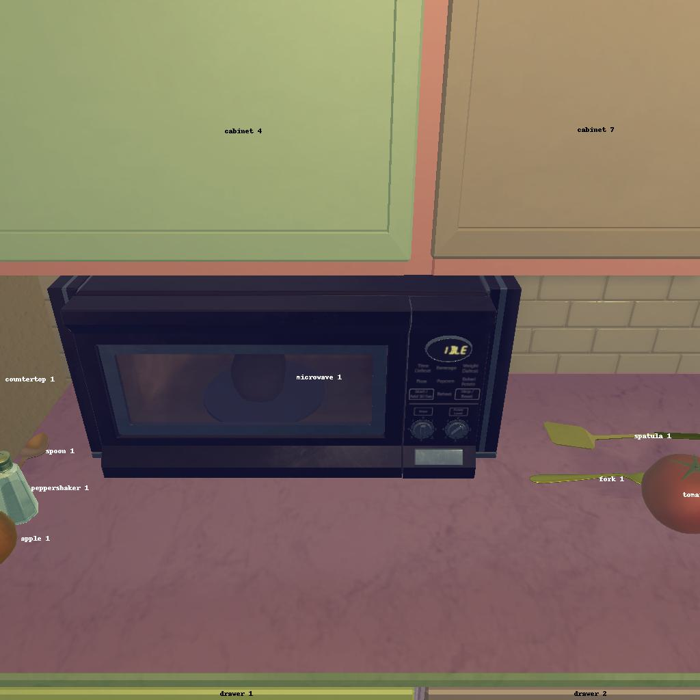

---------------------------------------------------------task: 10---------------------------------------------------------
--------------------------------------------------------------------------------------------------------------------------------------------------------------------
--------------------------------------------------------------------------------------------------------------------------------------------------------------------
Step:--------------------------------------------------------------------------6-------------------------------------------------------------------------------
----------------------------------------
VLM Prompt:
Image1:
**Instruction**
1. Analyze the provided image to identify all visible household objects, focusing on those relevant to the task description "clean some plate and put it in countertop."
2. Use the analysis of the image and the task hint "The agent must find an object of the desired type, pick it up, go to a sink or a basin, clean the object with a sink or basin, and then find the correct location to place it and put it down there. The agent does not need to use soap bottle or faucet to clean the object, and the agent just needs to do action that is "clean the object with the sink or sink basin"." to answer the question: what is the most reasonable action in the choices for the task description "clean some plate and put it in countertop"?
4. Decide and write the answer using the template: The answer is: (i): , where i is the real number. If there is no desired object in the image, search every place based on **Initial Observation** to find the object. And if no one is exactly correct, choose a similar answer.
**Initial Observation**
You are in the middle of a room. Looking quickly around you, you can see cabinet (1-20), toaster (1), microwave (1), garbagecan (1), countertop (1-2), drawer (1-4), stoveburner (1-4), sinkbasin (1), sink (1), fridge (1), diningtable (1), coffeemachine (1)
**Answer Choices**
(1): go to cabinet 1
(2): go to cabinet 3
(3): go to toaster 1
(4): go to cabinet 5
(5): go to microwave 1
(6): go to garbagecan 1
(7): go to countertop 1
(8): go to drawer 1
(9): go to cabinet 7
(10): go to drawer 2
(11): go to stoveburner 1
(12): go to stoveburner 2
(13): go to countertop 2
(14): go to cabinet 8
(15): go to cabinet 9
(16): go to cabinet 10
(17): go to drawer 3
(18): go to drawer 4
(19): go to stoveburner 3
(20): go to stoveburner 4
(21): go to cabinet 11
(22): go to cabinet 12
(23): go to cabinet 13
(24): go to cabinet 14
(25): go to sinkbasin 1
(26): go to sink 1
(27): go to cabinet 15
(28): go to fridge 1
(29): go to cabinet 16
(30): go to cabinet 17
(31): go to cabinet 18
(32): go to cabinet 19
(33): go to diningtable 1
(34): go to coffeemachine 1
(35): go to cabinet 20
(36): open cabinet 4
(37): close cabinet 4
(38): examine cabinet 4
**Answer**
Let's think step by step by following the instructions.
----------------------------------------
----------------------------------------
Original Response:
Firstly, we need to find a plate to clean. Plates are usually kept in cabinets, so we should look for a cabinet likely to contain plates. In the image, we see cabinet 4 and cabinet 7. Since the image does not show the inside of any cabinet, we cannot confirm the presence of a plate. Therefore, we will search every place based on the **Initial Observation** which mentions cabinets 1-20.
Once we find a plate in a cabinet, the next step would be to go to the sink or sink basin to clean the plate. In the image, neither a sink nor a sink basin is visible, but based on the **Initial Observation**, we know there is a sinkbasin 1 and a sink 1 in the room.
After cleaning the plate, we are instructed to put it on the countertop. The **Initial Observation** mentions there are countertop 1 and countertop 2.
Based on the analysis, the most reasonable action from the given choices for the task description "clean some plate and put it in countertop" is to first find a plate. Since the image does not provide enough information about where the plates are located, we must start by checking the cabinets. The answer is:
(1): go to cabinet 1
This action represents the beginning of the search for a plate in the cabinets. If a plate is found, the subsequent actions would be to clean it at the sink or sink basin and then place it on the countertop.
----------------------------------------
----------------------------------------
>>> Refine Original VLM Response and Get Pure Action: go to cabinet 1
This action represents the beginning of the search for a plate in the cabinets
----------------------------------------
-----------------------------------------------------------------
Running time: 15.430051565170288 seconds
Total Money: 3.0965200000000013
-----------------------------------------------------------------
-----------------------------------------------------------------
Text Observation:Nothing happens.
-----------------------------------------------------------------
UNSUCCEED